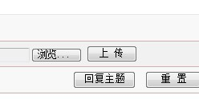
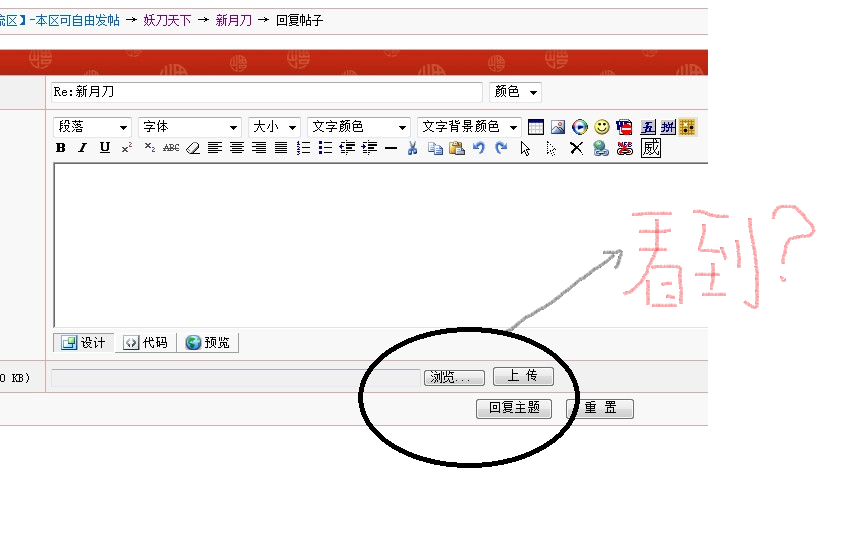

新月刀
#1 新月刀 作者：郎情 发表时间：2012-10-27 1:41:46
［此帖子已被 郎情 在 2012-10-27 1:57:34 编辑过］
#2 Re:新月刀 作者：失落刀 发表时间：2012-10-27 1:55:12
你发的图看不见#3 Re:新月刀 作者：郎情 发表时间：2012-10-27 1:55:43
不会吧
怎么回事？
#4 Re:新月刀 作者：失落刀 发表时间：2012-10-27 2:00:04
刚才看不见，，，
现在看见了，，，
可能刚才我网卡，，，
#5 Re:新月刀 作者：郎情 发表时间：2012-10-27 2:06:59
我刚才发的有标点的 可能你就看不了了 我每次发有标的图 都看不到 可能是我发的不对 我直接载图粘贴到这的 要发有标记的图怎么发

#6 Re:新月刀 作者：失落刀 发表时间：2012-10-27 2:09:54
可以截图，
然后保存截图到桌面，
然后点击“回复文章”
然后点击上传附件，
就这样，
#7 Re:新月刀 作者：郎情 发表时间：2012-10-27 2:12:13
哦难怪每次都不行 嘻嘻谢谢你了
#8 Re:新月刀 作者：失落刀 发表时间：2012-10-27 2:15:38
不客气，最近研究热门是外峡月，楼主可偶一为之。#9 Re:新月刀 作者：郎情 发表时间：2012-10-27 2:26:39
上传附件在哪？
#10 Re:新月刀 作者：郎情 发表时间：2012-10-27 2:33:42
一直在做外溪、时间都花在上面了、其他刀没怎么做#11 Re:新月刀 作者：失落刀 发表时间：2012-10-27 8:11:52

#12 Re:新月刀 作者：失落刀 发表时间：2012-10-27 8:14:24
11楼说明：
点回复文章，见图一，
然后出来图二，
然后点浏览--上传----回复主题，
#13 Re:新月刀 作者：郎情 发表时间：2012-10-27 10:53:02
我这边点击回复文章后是
图二
没有显示 浏览 --上传，
显示的是- 设计--代码--预览--
#14 Re:新月刀 作者：失落刀 发表时间：2012-10-27 11:31:15
你在13楼说的图一里面的“回复文章”这个按钮，
确认是14楼（本楼）图上的“回复文章”按钮吗？
［此帖子已被 失落刀 在 2012-10-27 11:42:03 编辑过］
#15 Re:新月刀 作者：郎情 发表时间：2012-10-27 11:44:59
是的啊 
#16 Re:新月刀 作者：郎情 发表时间：2012-10-27 11:47:25
我发信息给你了 你没收到？
#17 Re:新月刀 作者：失落刀 发表时间：2012-10-27 11:48:32
#18 Re:新月刀 作者：郎情 发表时间：2012-10-27 11:57:01
真没有 载图你又看不到
#19 Re:新月刀 作者：郎情 发表时间：2012-10-27 13:07:16
你加我QQ我载图给你看#20 Re:新月刀 作者：郎情 发表时间：2012-10-27 13:09:00
584978103#21 Re:新月刀 作者：山城刀客 发表时间：2012-10-27 14:06:57
很平衡的老定式，应该拆不出什么结论来，这个很多前人都拆过的，没什么结果……
［ 郎情 于 2012-10-27 17:50:10 时花20金币送鲜花一朵］
［ 郎情 于 2012-10-27 17:50:10 时花20金币送鲜花一朵］
［ 郎情 于 2012-10-27 17:50:10 时花20金币送鲜花一朵］